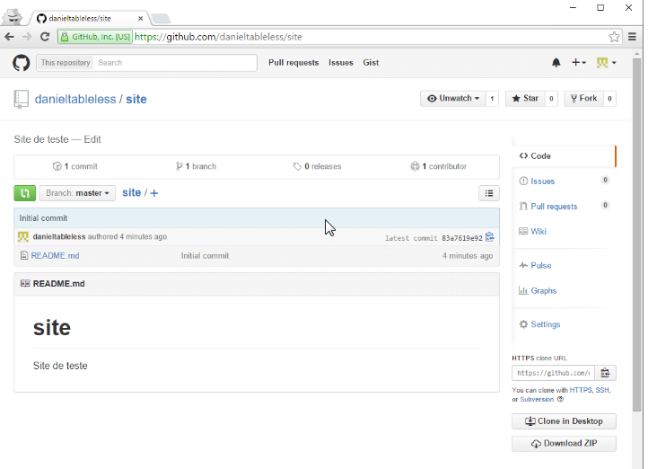
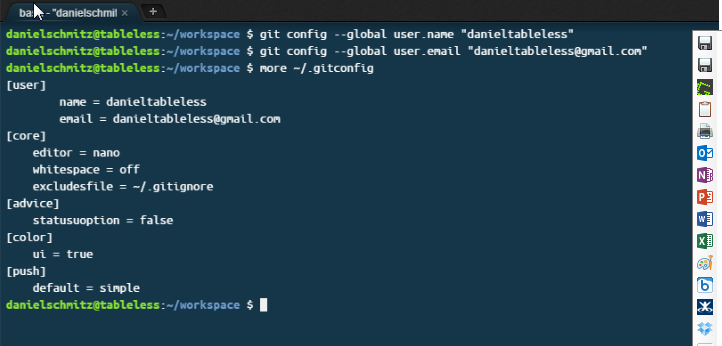
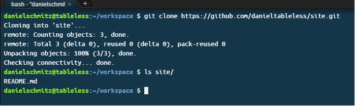

Nesta imagem estamos criando um repositório cujo nome é site, de domínio público (podem ser criados reps privados pagando uma mensalidade), e com o arquivo README.md embutido, que contém uma descrição do seu projeto. Para que possamos começar a entender como o git funciona, é fundamental criar um rep como este para os nossos testes.
Após a criação do repositório, ele estará disponível no endereço https://github.com/

Temos muitas informações nesta tela, pois ela é a tela principal do seu projeto. Explicaremos algumas informações ao longo deste artigo, por enquanto repare apenas no botão HTTPs Clone Url na parte inferior à direta. Esta URl será necessária para que possamos “clonar” este projeto em nosso ambiente de estudo (sua máquina windows, mac, linux ou a vm). Clique no botão de copiar URL e perceba que a seguinte URL está na área de transferência: https://github.com/
Existem meios para salvar a senha em local seguro, mas vamos pular esta etapa. Para abrir um terminal GIT no Windows, basta criar uma pasta no seu sistema e, nela, clicar com o botão direito do mouse e escolher Git Bash Here. Em sistemas mac/linux você já está acostumado a usar o terminal/console, o git estará lá disponível. Neste artigo estaremos utilizando a máquina virtual cloud9, que você pode aprender a usá-la neste artigo.
Então, com o seu terminal git aberto, vamos digitar:
$ git config --global user.name "YOUR NAME"
$ git config --global user.email "YOUR EMAIL ADDRESS"
Estas configurações ficam alocadas no arquivo ~/.gitconfig, onde o ~ é o seu diretório home. No Windows, ele fica em c:\Usuarios\

Vamos clonar!
Então o que temos até agora é o git configurado para utilizar o github e o projeto no github criado. Precisamos trazer este projeto para o nosso git, e este processo se chama clonar. Então, quando você quiser começar um projeto utilizando git, você cria ele no github e clona na sua máquina. O comando para clonar o projeto é git clone "url", veja:
git clone https://github.com/

Perceba que, ao fazer o git clone, o projeto é baixado para a sua máquina, e uma pasta com o nome do projeto é criada.
Quer dizer que qualquer pessoa pode baixar o meu projeto? Sim, isso é natural, já que o seu repositório está público. Qualquer um pode clonar ele para si, mas eles não podem alterar os seus arquivos, isso não vai acontecer, exceto que você permita.
Comandos iniciais do git
Com o repositório na sua máquina, vamos aprender 4 comandos iniciais que farão parte da sua vida a partir de agora:
git add
É importante saber que ADD não está adicionando um arquivo novo ao repositório, mas sim dizendo que o arquivo (sendo novo ou não) está sendo preparado para entrar na próxima revisão do repositório.
git commit -m "comentário qualquer" Este comando realiza o que chamamos de “commit”, que significa pegar todos os arquivos que estão naquele lugar INDEX que o comando add adicionou e criar uma revisão com um número e um comentário, que será vista por todos.
git push Push (empurrar) é usado para publicar todos os seus commits para o github. Neste momento, será pedido a sua senha.
git status Exibe o status do seu repositório atual
Se quiser saber mais, aperte o botão abaixo e confira:
Quinta Etapa